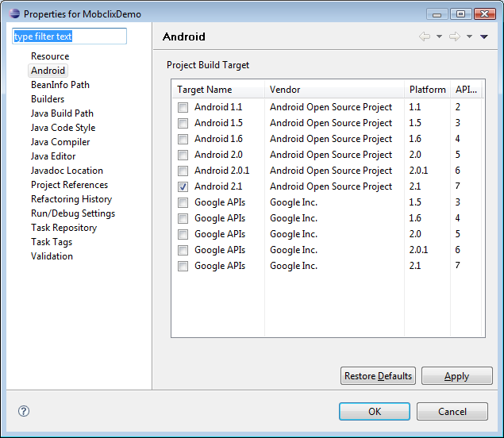

All required files can be found in the "mobclix.jar" library.
MobclixMMABannerXLAdView.class, MobclixIABRectangleMAdView.class, MobclixAdViewListener.class)Mobclix advertising library. Used for displaying advertising views of sizes 320x50 and 300x250.
Place these settings in the AndroidManifest.xml file of your Android project.
<?xml version="1.0" encoding="utf-8"?>
<manifest xmlns:android="http://schemas.android.com/apk/res/android"
package="com.mobclix.demo" android:versionName="1.0.0"
android:versionCode="1">
<application android:icon="@drawable/icon" android:label="@string/app_name" android:debuggable="true" android:hardwareAccelerated="true">
<activity android:name=".MobclixDemo" android:label="@string/app_name">
...
</activity>
...
<!-- Mobclix Required Parameters --/>
<meta-data android:name="com.mobclix.APPLICATION_ID" android:value="insert-your-application-key"/>
<activity android:name="com.mobclix.android.sdk.MobclixBrowserActivity"
android:theme="@android:style/Theme.Translucent.NoTitleBar"
android:hardwareAccelerated="true"/>
</application>
...
<!-- Mobclix Required Permissions --/>
<uses-permission android:name="android.permission.INTERNET"></uses-permission>
<uses-permission android:name="android.permission.READ_PHONE_STATE"></uses-permission>
<!-- Mobclix Optional Permissions --/>
<uses-permission android:name="android.permission.ACCESS_COARSE_LOCATION"></uses-permission>
<uses-permission android:name="android.permission.ACCESS_FINE_LOCATION"></uses-permission>
<uses-permission android:name="android.permission.ACCESS_NETWORK_STATE"></uses-permission>
</manifest>
com.mobclix.APPLICATION_ID (Required String)Your application's unique identifier on the Mobclix Mobile Platform.
android:hardwareAccelerated="true" (Required for Apps on Android Tablets)For applications that support Android tablets (Android SDK Version 3.0+), also add
android:hardwareAccelerated=”true” to the application flag. If this causes issues with your
application, at least add the line to the MobclixBrowserActivity. This
flag is used to ensure that HTML5 Video ads play on Android tablet devices. This flag also requires that
you set the build target to Android SDK Version 3.0+. However, you can still set minsdkversion to the
oldest version that you want to support.
MobclixBrowserActivityAn activity that handles interstitials utilized by some ads.
android.permission.INTERNET - Used to retrieve ads.
android.permission.READ_PHONE_STATE - Used to obtain a unique device identifier.
android.permission.ACCESS_FINE_LOCATION - Used for location targeting ads.
android.permission.ACCESS_COARSE_LOCATION - Used for location targeting ads.
android.permission.ACCESS_NETWORK_STATE - Used to determine the state of the network before requesting ads.
It is recommended that the most recent android SDK be used with the Mobclix Android library. 2.2 at the time of this release, however, all versions of Android are currently supported.

import com.mobclix.android.sdk.MobclixAdView;The Mobclix for Android Advertising plugin gives you access to a wealth of advertising options from the Mobclix Exchange. MobclixAdView is an abstract class that the following two classes extend.
import com.mobclix.android.sdk.MobclixIABRectangleMAdView;
import com.mobclix.android.sdk.MobclixMMABannerXLAdView;
Subclasses of MobclixAdView that display 320x50 (MobclixMMABannerXLAdView) and 300x250 (MobclixIABRectangleMAdView) advertising units. Simply define the one you want in the layout xml and use findViewById in your MobclixActivity to instantiate it. Call getAd or set refreshTime to display advertisements.
Note: If you aren't using a layout to define the AdViews and are instead building them programmatically, be sure to build the AdView with its parent Activity, not the application context.
void getAd()Requests an advertisement. Additional calls will cancel pending requests to the ad server.
void pause()Pauses an AdView refresh timer. No new ads will load for the AdView until Resume() is called.
void resume()Resumes an AdView refresh timer with the previously set refresh time.
void setRefreshTime(long refreshTime)Automatic refresh rate for advertisements in milliseconds. Upon setting this property, a request for an advertisement will made at once. The MobclixAdView will then continually request an advertisement after the specified refresh time has enlapsed until cancelAd is sent, the application ends, or the MobclixAdView is released. This will override the refresh time defined on the Mobclix Dashboard.
| Parameters | |
|---|---|
| refreshTime | The automatic refresh rate for the AdView in milliseconds. |
void setAllowAutoplay(boolean allowAutoplay)Some ads may have a fullscreen interstitial experience. If an AdView is allowed to autoplay, these interstitials will load immediately into a new Activity. By default, MobclixMMABannerXLAdView have this feature disabled while MobclixIABRectangleMAdView have this feature enabled.
| Parameters | |
|---|---|
| allowAutoplay | Whether the AdView is allowed to autoplay interstitial ads. |
void setRichMediaRequiresUserInteraction(boolean requiresUserInteraction)If an AdView is set to require user interaction for rich media ads, rich media ads must be clicked before the ad has access to features of the phone that wouldn’t otherwise take the user away from your app such as vibrate, flash, etc.
| Parameters | |
|---|---|
| requiresUserInteraction | Whether the AdView requires user interaction for rich media ads to access certain features of the phone. |
boolean addMobclixAdViewListener(MobclixAdViewListener listener)Adds an optional listener. Returns true if the listener is successfully added. Returns false if the listener has already been added.
| Parameters | |
|---|---|
| listener | An object implementing the MobclixAdViewListener interface that recieves MobclixAdView callbacks. |
| Return |
|---|
true if the listener is successfully added. false if the MobclixAdView already has this listener. |
boolean removeMobclixAdViewListener(MobclixAdViewListener listener)Removes a listener.
| Parameters | |
|---|---|
| listener | An object implementing the MobclixAdViewListener interface that recieves MobclixAdView callbacks. |
| Return |
|---|
true if the listener is successfully removed. false if the MobclixAdView does not have this listener. |
void continueRequest()Used in Open Allocation. If the developer manually handles an Open Allocation callback (such as Open Allocation: Other), but doesn't succeed in handling it (such as a third party SDK failing to return an ad), he should call this method. This will alert the Mobclix SDK that developer's attempt to manually handle the callback has failed and should try another network.
import com.mobclix.android.sdk.MobclixAdViewListener;Listener for MobclixAdViews can recieve two types of callbacks - status notifications for the MobclixAdView or requests for advertising targeting parameters. MobclixAdViewListener is an interface; all methods must be implemented.
// Advertisement Status Callbacks (optional)void onSuccessfulLoad(MobclixAdView adView)Called when the MobclixAdView has finished loading an advertisement.
| Parameters | |
|---|---|
| adView | Reference to specific MobclixAdView object. |
void onFailedLoad(MobclixAdView adView, int errorCode)Called when the MobclixAdView has failed to load an advertisement. Possible error codes:
| Error Code | Value | Description |
|---|---|---|
MobclixAdViewListener.UNKNOWN_ERROR |
0 |
// An unknown error has occurred. |
MobclixAdViewListener.UNAVAILABLE |
-503 |
// Advertisement is not available at this time. |
MobclixAdViewListener.APP_NOT_IN_FOREGROUND |
-777777 |
// Ad did not display because the app is not in the foreground. |
MobclixAdViewListener.ADS_NOT_STARTED |
-888888 |
// Ad request failed because ads have not yet been started. |
MobclixAdViewListener.AD_REQUEST_CANCELED |
-999998 |
// The ad request was canceled either by the developer or because the AdView has been
hidden. |
MobclixAdViewListener.ADSIZE_DISABLED |
-999999 |
// Ad size has been disabled on the Mobclix Developer Dashboard. |
| Parameters | |
|---|---|
| adView | Reference to specific MobclixAdView object. |
| errorCode | See Error Code table above. |
boolean onOpenAllocationLoad(MobclixAdView adView, int openAllocationCode)Called when the MobclixAdView has loaded an open allocation. It is up to the developer to handle any or all open allocation events. Possible open allocation codes:
| Open Allocation Code | Value | Description |
|---|---|---|
MobclixAdViewListener.SUBALLOCATION_ADMOB |
-750 |
// Open Allocation: AdMob Suballocation |
MobclixAdViewListener.SUBALLOCATION_OTHER |
-1006 |
// Open Allocation: Other Suballocation |
MobclixAdViewListener.SUBALLOCATION_GOOGLE |
-10100 |
// Open Allocation: Google Suballocation |
MobclixAdViewListener.SUBALLOCATION_MILLENNIAL |
-111111 |
// Open Allocation: Millennial Media Suballocation |
| Parameters | |
|---|---|
| adView | Reference to specific MobclixAdView object. |
| openAllocationCode | See Open Allocation Code table above. |
| Return |
|---|
true if the open allocation event was consumed. false if the MobclixAdView should continue handling the open allocation. This currently only applies to oepn allocation AdMob. If false is returned, the MobclixAdView will automatically load an AdMob ad in the AdView. If you wish to handle AdMob ads yourself, you must set up a listener and return true to open allocation AdMob calls. |
// Advertisement Touchthrough Callbacksvoid onAdClick(MobclixAdView adView)Called when the user has touched a Advertisement..
| Parameters | |
|---|---|
| adView | Reference to specific MobclixAdView object. |
void onCustomAdTouchThrough(MobclixAdView adView, String string)Called when the user has touched a Custom Advertisement that links to a url with the format mobclix://foo.
| Parameters | |
|---|---|
| adView | Reference to specific MobclixAdView object. |
| string | String following mobclix:// in the url. In the example above, it would be "foo". |
// Additional Filters CallbacksString keywords()Called when the MobclixAdView is retrieving an ad.
| Return |
|---|
A comma separated list of keyword terms describing the application or null. |
String query()Called when the MobclixAdView is retrieving an ad.
| Return |
|---|
A comma separated list of search terms or null. |
import com.mobclix.android.sdk.MobclixFullScreenAdView;To use the MobclixFullScreenAdView, you must instantiate the MobclixFullScreenAdView in your java code with a reference to your Activity. From there, you
are provided the requestAd, displayRequestedAd, and requestAndDisplayAd to handle the state of the ad.
Be sure to build the AdView with its parent Activity, not the application context.
When using the MobclixFullScreenAdView, the easiest call to make is requestAndDisplayAd. This will simply request the ad and display the ad when
it has been downloaded and rendered. However, this can mean that the ad can display at arbitrary times, even if the user has navigated to another Activity. The better
solution is to use a MobclixFullScreenAdViewListener to monitor the state of the MobclixFullScreenAdView and use requestAd and displayRequestedAd.
By requesting the ad separately from displaying it, you can, for example, request when you start an Activity and display it as the user leaves for the next Activity, provided
the MobclixFullScreenAdView hasAd.
void requestAd()Requests an advertisement which will download and render the ad but not display it. Additional calls will cancel pending requests to the ad server.
boolean hasAd()Returns if the MobclixFullScreenAdView has an ad loaded via the requestAd method.
| Return |
|---|
true if the MobclixFullScreenAdView has an ad loaded. false if the MobclixFullScreenAdView does not have an ad loaded. |
boolean displayRequestedAd()Displays an advertisement loaded by the MobclixFullScreenAdView if one exists. It is recommended to use the hasAd method to verify that an ad has
loaded prior to calling this method.
| Return |
|---|
true if the the loaded ad is displayed. false if the MobclixFullScreenAdView does not have an ad loaded. |
void requestAndDisplayAd()Requests an advertisement and immediately displays it after it has downloaded and rendered. Since this is a full screen ad, it will take over the screen as soon as it finishes loading, even if the user has moved on to another Activity within your application. Additional calls will cancel pending requests to the ad server.
boolean addMobclixAdViewListener(MobclixFullScreenAdViewListener listener)Adds an optional listener. Returns true if the listener is successfully added. Returns false if the listener has already been added.
| Parameters | |
|---|---|
| listener | An object implementing the MobclixFullScreenAdViewListener interface that recieves MobclixAdView callbacks. |
| Return |
|---|
true if the listener is successfully added. false if the MobclixFullScreenAdView already has this listener. |
boolean removeMobclixAdViewListener(MobclixFullScreenAdViewListener listener)Removes a listener.
| Parameters | |
|---|---|
| listener | An object implementing the MobclixFullScreenAdViewListener interface that recieves MobclixAdView callbacks. |
| Return |
|---|
true if the listener is successfully removed. false if the MobclixFullScreenAdView does not have this listener. |
import com.mobclix.android.sdk.MobclixFullScreenAdViewListener;Listener for MobclixFullScreenAdViews can recieve two types of callbacks - status notifications for
the MobclixFullScreenAdView or requests for advertising targeting parameters. MobclixAdViewListener is
an interface; all methods must be implemented.
// Advertisement Status Callbacks (optional)void onFinishLoad(MobclixFullScreenAdView adView)Called when the MobclixFullScreenAdView has finished loading an advertisement and is ready to display.
| Parameters | |
|---|---|
| adView | Reference to specific MobclixFullScreenAdView object. |
void onFailedLoad(MobclixFullScreenAdView adView, int errorCode)Called when the MobclixFullScreenAdView has failed to load an advertisement. Possible error codes:
| Error Code | Value | Description |
|---|---|---|
MobclixFullScreenAdView.UNKNOWN_ERROR |
0 |
// An unknown error has occurred. |
MobclixFullScreenAdView.UNAVAILABLE |
-503 |
// Advertisement is not available at this time. |
MobclixFullScreenAdView.ADSIZE_DISABLED |
-999999 |
// Ad size has been disabled on the Mobclix Developer Dashboard. |
| Parameters | |
|---|---|
| adView | Reference to specific MobclixFullScreenAdView object. |
| errorCode | See Error Code table above. |
void onPresentAd(MobclixFullScreenAdView adView)Called when the MobclixFullScreenAdView presents its loaded full screen advertisement, which will take over the full screen.
| Parameters | |
|---|---|
| adView | Reference to specific MobclixFullScreenAdView object. |
void onDismissAd(MobclixFullScreenAdView adView)Called when the MobclixFullScreenAdView is dismissed and the application will regain focus.
| Parameters | |
|---|---|
| adView | Reference to specific MobclixFullScreenAdView object. |
// Additional Filters CallbacksString keywords()Called when the MobclixFullScreenAdView is retrieving an ad.
| Return |
|---|
A comma separated list of keyword terms describing the application or null. |
String query()Called when the MobclixFullScreenAdView is retrieving an ad.
| Return |
|---|
A comma separated list of search terms or null. |
import com.mobclix.android.sdk.MobclixFeedback;The Mobclix for Android Feedback plugin allows you to get qualitative and quantitative feedback data from your users.
public static void sendComment(Activity activity, String comment)Sends a qualitative comment from a user to your account on the Mobclix Mobile Platform.
| Parameters | |
|---|---|
| activity | The activity that is making this feedback call. |
| comment | The comment to be sent. |
public static void sendComment(Activity activity, String comment, MobclixFeedback.Listener listener)Sends a qualitative comment from a user to your account on the Mobclix Mobile Platform, with a MobclixFeedback.Listener for getting callbacks regarding whether the data was sent successfully.
| Parameters | |
|---|---|
| activity | The activity that is making this feedback call. |
| comment | The comment to be sent. |
| listener | An implementation of MobclixFeedback.Listener with methods to call if the data was sent successfully or not. |
public static void sendRatings(Activity activity, MobclixFeedback.Ratings ratings)Sends quantitative ratings from your users to your account on the Mobclix Mobile Platform.
| Parameters | |
|---|---|
| activity | The activity that is making this feedback call. |
| ratings | The ratings to be sent. |
public static void sendRatings(Activity activity, MobclixFeedback.Ratings ratings, MobclixFeedback.Listener listener)Sends quantitative ratings from your users to your account on the Mobclix Mobile Platform, with a MobclixFeedback.Listener for getting callbacks regarding whether the data was sent successfully.
| Parameters | |
|---|---|
| activity | The activity that is making this feedback call. |
| ratings | The ratings to be sent. |
| listener | An implementation of MobclixFeedback.Listener with methods to call if the data was sent successfully or not. |
import com.mobclix.android.sdk.MobclixFeedback.Ratings;A class that stores ratings to pass back to the Mobclix servers.
public void setCategoryA(int value)Set the rating value of category A.
| Parameters | |
|---|---|
| value | Rating value of category A. Must be between 1 and 5 inclusive. |
public void setCategoryB(int value)Set the rating value of category B.
| Parameters | |
|---|---|
| value | Rating value of category B. Must be between 1 and 5 inclusive. |
public void setCategoryC(int value)Set the rating value of category C.
| Parameters | |
|---|---|
| value | Rating value of category C. Must be between 1 and 5 inclusive. |
public void setCategoryD(int value)Set the rating value of category D.
| Parameters | |
|---|---|
| value | Rating value of category D. Must be between 1 and 5 inclusive. |
public void setCategoryE(int value)Set the rating value of category E.
| Parameters | |
|---|---|
| value | Rating value of category E. Must be between 1 and 5 inclusive. |
import com.mobclix.android.sdk.MobclixFeedback.Listener;A listener for Mobclix Feedback calls used to indicate the success or failure of sent data.
public static void onSuccess()Called if the data sent by a Mobclix Feedback call was successfully received.
public static void onFailure()Called if the data of a Mobclix Feedback call failed to be sent.
import com.mobclix.android.sdk.MobclixDemographics;The Mobclix for Android Demographics plugin allows you to get quantitative feedback demographics data from your users.
public static void sendDemographics(Activity activity, Map demographics) Sends quantitative demographics data from your users to your account on the Mobclix Mobile Platform.
| Parameters | |
|---|---|
| activity | The activity that is making this feedback call. |
| demographics | The demographics to be sent as a Map of data, as detailed below. |
public static void sendDemographics(Activity activity, Map demographics, MobclixFeedback.Listener listener) Sends quantitative demographics data from your users to your account on the Mobclix Mobile Platform, with a MobclixFeedback.Listener for getting callbacks regarding whether the data was sent successfully.
| Parameters | |
|---|---|
| activity | The activity that is making this feedback call. |
| demographics | The demographics to be sent as a Map of data, as detailed below. |
| listener | An implementation of MobclixFeedback.Listener with methods to call if the data was sent successfully or not. |
| Map Key | Description | Enum Values / Examples |
|---|---|---|
MobclixDemographics.Birthdate |
Date - Date of birth of the user. |
new Date(1970, 1, 1); |
MobclixDemographics.Education |
Enum - Highest level of education of the user. |
MobclixDemographics.EducationUnknown |
MobclixDemographics.Ethnicity |
Enum - Ethnicity of the user. |
MobclixDemographics.EthnicityUnknown |
MobclixDemographics.Gender |
Enum - Gender of the user. |
MobclixDemographics.GenderUnknown |
MobclixDemographics.DatingGender |
Enum - Gender that the user dates/would date. |
MobclixDemographics.GenderUnknown |
MobclixDemographics.Income |
int - Amount a user makes in income. |
50000 |
MobclixDemographics.MaritalStatus |
Enum - Marital status of the user. |
MobclixDemographics.MaritalUnknown |
MobclixDemographics.Religion |
Enum - Religion of the user. |
MobclixDemographics.ReligionUnknown |
MobclixDemographics.AreaCode |
int - Telephone area code. |
408 |
MobclixDemographics.City |
String - City. |
Palo Alto |
MobclixDemographics.Country |
String - Country. ISO 3166-1 country code. Must be length 2. |
US |
MobclixDemographics.DMACode |
int - DMA code. Nielsen Designated Market Area. |
552 |
MobclixDemographics.MetroCode |
int - Metropolitan region code. |
717 |
MobclixDemographics.PostalCode |
String - Postal code. 12 characters or less. |
93432-3323 |
MobclixDemographics.Region |
String - Region. ISO 3166-2 region code. |
AU-NSW |